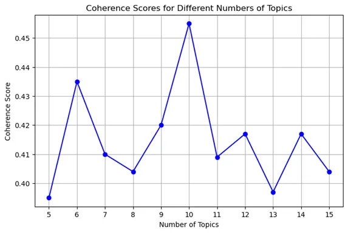

PREDICTING BILLBOARD SUCCESS: A TOPIC MODELING APPROACH
-
Role
Lead Data Scientist
-
Organization
Self-initiated
-
Tools
Python, LDA Topic Modeling, Machine Learning
PROBLEM STATEMENT
Music is not merely an art-form but a medium for societies to capture emotions and cultural nuances. Within the music industry, the Billboard charts serve as a testament to the popularity and longevity of musical tracks. Songs that remain on the Billboard chart for extended periods are those that are not only appealing to current trends, but also become part of the public's daily life, influencing trends and often becoming part of the cultural zeitgeist.
Previous studies have found that the longevity of a recording on charts has implications for immediate revenue generation, revenue for future release, concert attendance, and product endorsements (Giles, 2007). While multiple studies have investigated the importance of audio features such as duration, time signature and danceability in predicting a song's longevity (Saragih, 2021), few studies have investigated the role that lyrics might play in a song's popularity.
DATA SOURCE
Songs that have charted on the Billboard Hot 100 chart will be the scope of this study. This dataset was retrieved from Kaggle, a community website for data science. The dataset contains lyrics of popular songs, with accompanying metadata like the song title, track artist, number of weeks on Billboard as well as peak / bottom position on the chart.
A separate Kaggle dataset that contained the metadata of songs such as duration and time signature, as well as audio features as extracted from the Spotify API was also retrieved. Finally the lyrics of these songs were retrieved by extracting the lyrics from the API created by Genius using each of the song's title and artist.
Finally, these three datasets were joined together to form the final dataset which contained 3,602 unique songs.
KEY VARIABLES
- Song Title: This contains the title of the song
- Artist: This contains the name of the singer
- Song Features: This is a collection of variables extracted from the Spotify API that include metadata on the song including song duration and time signature, as well as the audio features of the song like danceability, acousticness.
- Song Lyrics: This is a variable that stores the pre-processed lyrics of the song. Please refer to the section on data preprocessing below for the data cleaning that will be conducted.
- Time_on_chart: This refers to the number of weeks that the song has been listed on the Billboard Hot 100 chart and is the dependent variable for this study.
DATA PREPROCESSING
Song lyrics can be varied and complex with special characters, annotations, and possibly even multiple languages. It was therefore essential to preprocess the data to ensure consistent analysis. The preprocessing of the lyrics data involved several key steps to ensure its suitability for analysis. Commas and new line characters were removed to maintain data structure integrity and ensure a continuous text flow. Textual annotations, such as [VERSE] or [CHORUS], were removed to focus on the core lyric content. Additionally, any special characters arising from varied languages or encoding discrepancies were also removed to maintain a clean dataset.
PREPROCESSING PIPELINE
Tokenization: Raw lyrics are broken down into individual words, known as tokens. This step transforms continuous text into discrete elements
Filtering of Short and Numeric Tokens: Next, I employ a filtering step to remove tokens that are either purely numeric or shorter than three characters in length. This refinement is essential as it helps to focus the analysis on meaningful and substantial words, excluding brief interjections and numbers that might skew the thematic interpretation.
Lemmatization: Another critical phase involves lemmatization, in which tokens are normalized to their root forms. By reducing words to their base or dictionary form, it is possible to more accurately assess the frequency and relevance of terms within the lyrics.
Removal of Stop Words and Profanities: To ensure that our analysis concentrates on the most pertinent and expressive content, I remove common stop words and profanities from the lyrics. Stop words are words that are highly frequent yet informationally sparse. Including such words can detract from the thematic richness of the text. Similarly, profanities are filtered out to allow the focus to be on the actual thematic language elements.
Occurrence-based Filtering: In this step, I eliminate tokens that appear in more than 80% of the songs. This filtering is crucial as it helps to discard overly common words that could dilute the distinctiveness of thematic patterns across the corpus.
Conversion to Bag-of-Words: Finally, the processed lyrics are converted into a bag-of-words format. This transformation emphasizes the occurrence and frequency of words within the lyrics, disregarding their sequential order. The bag-of-words model simplifies the text data, rendering it more amenable to topic modeling.
TOPIC MODELING METHODOlOGY
Post-preprocessing, Latent Dirichlet Allocation (LDA) was conducted to extract the underlying topics in the lyrics as per Figure 1 below.
Figure 1: TOpic MOdelling via Latent Dirichlet AllOcatiOn
For each song lyric d in our corpus of song lyrics m:
- 1. Select a distribution over topics 𝜃𝑑 from a Dirichlet distribution with parameter ∝
- 2. For each word w in the song lyric:
- a. Choose a topic Z𝑑 from the distribution
- b. The model estimates the probability of a word w being generated by topic Z𝑑
The hyperparameters of ∝ and 𝛽 are being optimized automatically by the LDA algorithm based on the corpus. The number of topics k is a pivotal hyperparameter that is determined through the coherence score, and is explained in Section 4.1 Topic Modelling via LDA section below.
The model assigns one topic (of the highest probability) to each song based on the patterns and frequencies of words.
MODEl PREPARATION
The final model was selected based on the model with the best performance (as defined in the Section 4.2 Prediction of number of weeks a song remains on the Billboard Hot 100 below). To ensure that the model's performance is not a result of a particular random train-test split, k-fold cross-validation will be used. All of the features were also standardized prior to modelling as the dataset included features with different units. Categorical variables like the topic of the song was encoded. For example, since the "topic" column contains categorical data in string format, it was transformed using one-hot encoding to separate binary columns for each unique topic.
TOPIC MODELING RESULTS
One of the crucial decisions in LDA modeling is choosing the optimal number of topics. To determine the best number of topics, I trained models with different numbers of topics (ranging from 5 to 15). The choice of 5–15 topics was to allow for a balance to prevent the topics from being overly broad or too specific. Coherence score, a metric that quantifies the semantic similarity between high scoring words in each topic, was used to assess the quality of the topics generated by each model. The coherence scores for the models are shown in Figure 2 below.
Figure 2: COherence ScOres fOr Different Numbers Of TOpics
{kind=link}
Table 1: TOp 10 MOst Frequent WOrds by TOpic
| Topic | W1 | W2 | W3 | W4 | W5 | W6 | W7 | W8 | W9 | W10 |
|---|---|---|---|---|---|---|---|---|---|---|
| 0 | love | heart | give | hold | forever | together | kiss | TRUE | lover | sweet |
| 1 | baby | wanna | girl | tonight | body | boy | crazy | feel | good | need |
| 2 | get | come | back | dance | stop | around | turn | run | move | show |
| 3 | eye | heart | world | inside | see | fire | fall | pain | life | soul |
| 4 | money | gon' | hit | hoe | tryna | game | 'lil | real | 'bout | hustle |
| 5 | man | big | old | rock | town | roll | house | street | new | car |
| 6 | time | day | home | long | night | gone | alone | stay | life | leave |
| 7 | know | never | like | see | think | want | nothing | ever | make | feel |
| 8 | god | lord | life | heaven | jesus | child | king | pray | power | angel |
| 9 | light | sun | sky | star | blue | fly | sing | wind | dream | moon |
Table 2: Details Of the 10 tOpics derived frOm LDA tOpic mOdelling
| S/N | Topic Label | Description | Example Song | Representative Lyrics | Average Weeks on Billboard |
|---|---|---|---|---|---|
| 0 | Romantic Love | Focuses on deep emotional connections and enduring affection, with words like "love" and "heart" | I Will Always Love You by Whitney Houston | "And I.. will always love you, will always love you" | 15.762 |
| 1 | Flirtation & Desire | Centers around flirtation and physical attraction, featuring words such as "baby" and "wanna" | Shape of You by Ed Sheeran | "Girl, you know I want your love, your love was handmade for somebody like me" | 20.518 |
| 2 | Movement & Action | Emphasizes dynamic, energetic aspects of music, with action-oriented words like "dance" and "move" | Raise Your Glass by P!nk | "So raise your glass if you are wrong, in all the right ways" | 20.183 |
| 3 | Inner Feelings & Metaphysical | Explores deep emotions and existential themes, with words like "soul" and "fire" | Welcome to The Black Parade by My Chemical Romance | "Sometimes I get the feeling, she's watching over me, and other times I feel like I should go" | 21.335 |
| 4 | Street Life & Aggression | Deals with the harsh realities of street life and aggression, marked by words like "gang" and "money" | HUMBLE by Kendrick | "If I quit your BM I still ride Mercedes, funk, If I quit this season I still be the greatest, funk" | 15.530 |
| 5 | Masculinity & Everyday Life | Narrates everyday life experiences, often from a masculine perspective, using words like "man" and "car" | Castle on the Hill by Ed Sheeran | "I watched the sunset over the castle on the hill" | 16.653 |
| 6 | Time & Nostalgia | Reflects on the passage of time and nostalgia, with words such as "time" and "day" | Since U Been Gone by Kelly Clarkson | "Since you've been gone, I can breathe for the first time" | 17.247 |
| 7 | Life Reflections & Decisions | Focuses on introspection and life choices, with reflective words like "think" and "know" | Viva La Vida by Coldplay | "I used to rule the world, seas would rise when I gave the word" | 21.519 |
| 8 | Spirituality & Conflict | Revolves around spirituality and moral conflicts, with words like "god" and "pray" | Livin on a Prayer by Bon Jovi | "Whoa oh, livin' on a prayer, take my hand and I'll make it I swear" | 13.455 |
| 9 | Nature & Escape | Touches on themes of nature and escapism, using words like "sun" and "sky" | A Sky Full of Stars by Coldplay | "Cause you're a sky, cause you're a sky full of stars" | 17.783 |
MODEL PREPARATION
Five models were employed for this analysis. The models built were Linear Regression, Random Forest, Gradient Boosting, Support Vector Machine, and Neural Network. The performance of each model was evaluated using Root Mean Square Error (RMSE), Mean Absolute Error (MAE), and the R-squared (R²) value, both with and without the ‘Topic of Song’ variable. As regression will be the primary model used, metrics like the Mean Absolute Error (MAE) or Root Meant Squared Error (RMSE), as well as the R-square value will be used to evaluate the accuracy of the prediction. The results from the 5 models, with and without “Topic of Song” included as a feature are summarized as follows in Table 3.
Table 3: PerfOrmance fOr the 5 mOdels, including and excluding TOpic Of SOng as a feature
| Algorithm | Topic of Song included as a feature | RMSE | MAE | Adjusted R² |
|---|---|---|---|---|
| Linear Regression | Included | 4.9448 | 2.3227 | 0.8506 |
| Excluded | 4.9911 | 2.3213 | 0.8478 | |
| Random Forest | Included | 2.3688 | 0.5096 | 0.9657 |
| Excluded | 2.3912 | 0.5114 | 0.9651 | |
| Gradient Boosting | Included | 2.6445 | 1.0829 | 0.9573 |
| Excluded | 2.5560 | 1.0762 | 0.9601 | |
| Support Vector Machine | Included | 4.8846 | 2.5854 | 0.8542 |
| Excluded | 4.9452 | 2.5617 | 0.8506 | |
| Neural Network | Included | 2.8736 | 1.3088 | 0.9495 |
| Excluded | 2.9418 | 1.3358 | 0.9471 |
The Random Forest model exhibited the highest predictive accuracy and precision, as evidenced by its lowest RMSE and MAE values, and highest R² value. This suggests that it is the most suitable model for this type of data and prediction task. The performance slightly declines without “Topic of Song” included as a variable. This observation suggests that while the lyrical theme of a song, as captured by LDA-derived topics, may have some influence on its chart performance, it does not appear to be a dominant factor in these models. Apart from the Random Forest model, the Gradient Boosting model also exhibited relatively high R² value but interestingly was slightly better without the inclusion of the topic feature as compared to when the variable was included. In the case of Linear Regression, the low R² values in both scenarios imply a weak fit, suggesting that the relationship between the features and the target variable is not well-captured by a linear model.
FEATURE IMPORTANCE
To investigate this further, feature importance of each topic was extracted from the top performing model — Random Forest — to further examine how importance each topic is in determining song popularity. The feature importance scores of each topic are listed in Table 4 below.
Table 4: Feature ImpOrtance Of the 10 tOpics based On RandOm FOrest
| Feature | Topic Label | Feature Importance from Random Forest |
|---|---|---|
| top_topic_7 | Life Reflections & Decisions | 2.70E-04 |
| top_topic_1 | Flirtation & Desire | 2.53E-04 |
| top_topic_6 | Time & Nostalgia | 1.62E-04 |
| top_topic_3 | Inner Feelings & Metaphysical | 1.10E-04 |
| top_topic_8 | Spirituality & Conflict | 8.88E-05 |
| top_topic_5 | Masculinity & Everyday Life | 4.57E-05 |
| top_topic_2 | Movement & Action | 3.87E-05 |
| top_topic_4 | Street Life & Aggression | 3.62E-05 |
| top_topic_0 | Romantic Love | 3.20E-05 |
| top_topic_9 | Nature & Escape | 8.66E-07 |
The low feature importance values across all 10 topics reveal minimal influence on predicting a song's duration on the Billboard charts. This observation implies that while the thematic content of lyrics plays a role in a song's success, it is not the sole determinant of the popularity of the song on Billboard 100.
CONClUSIONS & FUTURE RESEARCH
This study has demonstrated that while song lyrics can be effectively categorized into distinct topics using LDA, these topics have limited predictive power for a song's Billboard chart performance. The Random Forest model achieved the best performance in predicting a song's duration on the Billboard Hot 100, with an R² value of 0.9657 and an RMSE of 2.3688 weeks.
The analysis revealed ten distinct lyrical topics in popular music, ranging from romantic themes to social commentary. However, the feature importance analysis showed that these topics had relatively low importance in predicting chart success, suggesting that lyrical content alone is not a strong determinant of a song's commercial performance.
Future research could explore additional features such as:
- Sentiment analysis of lyrics
- Musical features like tempo and key
- Marketing and promotional efforts
- Artist popularity and social media presence
These factors might provide additional insights into what drives a song's success on the Billboard charts.